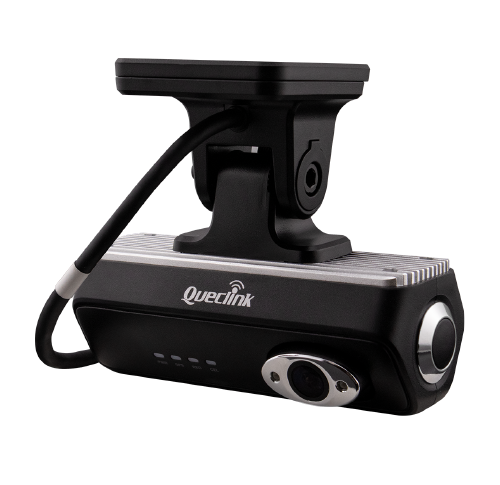
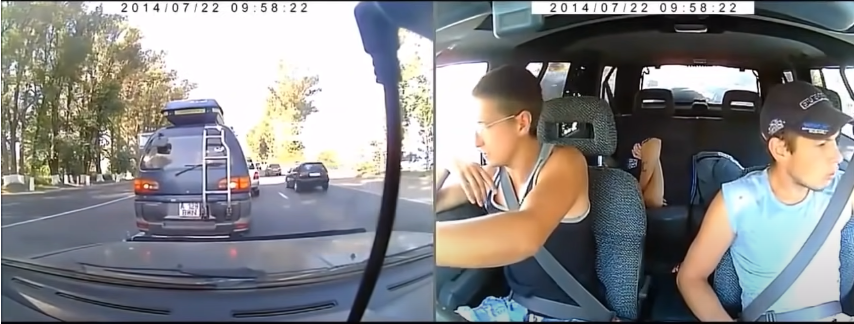

INTELIGENCIA EN MOVIMIENTO
Tu operación.
A la vista.
En tus manos.
GPS, video en vivo y telemetría.
Todo lo que pasa en el camino, bajo tu control.
RT / VIDEO TELEMATICS

VIDEO + GPS Una visión completa.
◎
DASHCAM / CONTROL SIN PUNTOS CIEGOSVisión en el caminoCámara frontal + cabina
01 / VIDEO INTELIGENTE
No lo imagines.
Míralo.
El mapa te dice dónde.
La cámara te muestra qué pasa.

VISTA ILUSTRATIVART MOBILE / DUAL VIEW
CAMINO + CABINAGPS + STREAMING
DASHCAM + STREAMINGEstar ahí.
Estar ahí.
Desde donde estés.
Consulta el recorrido en vivo y vuelve a las grabaciones cuando necesites revisar un evento.
01
Video en tiempo realEl camino y la cabina, a tu alcance.
02
Evidencia cuando importaAcceso a grabaciones desde la plataforma.
03
Quiero verlo en acción ↗Ubicación + contextoConecta lo que ves con el recorrido.
02 / EQUIPOS QUE CONECTAN
Cada operación.
Su solución.
Del vehículo al activo.
Elige qué quieres tener bajo control.
03 / TOMA EL CONTROL
Menos promesas.
Más demostración.
Explora una vista ilustrativa o agenda
una sesión con nuestro equipo.
Las vistas ilustrativas usan contenido de ejemplo. Solicita acceso a una demostración real.
EL SIGUIENTE MOVIMIENTO ES TUYO